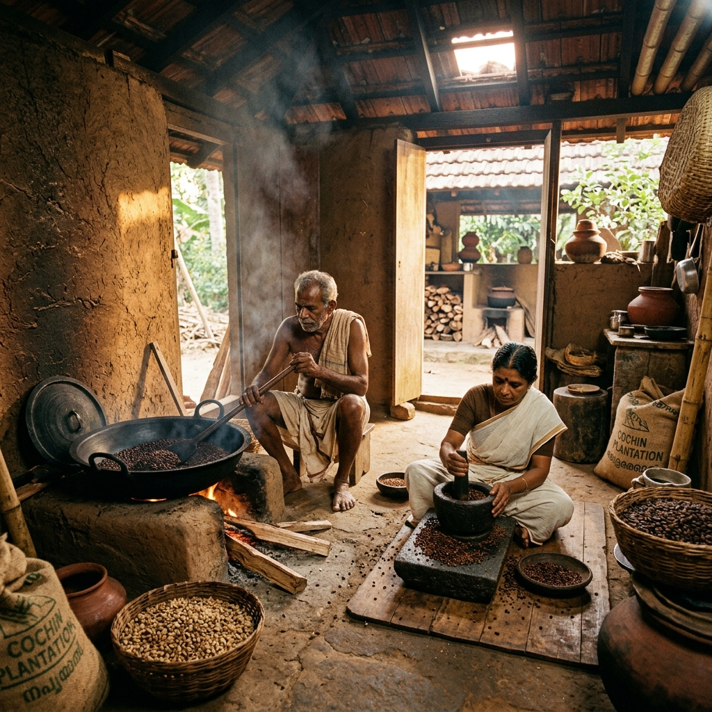
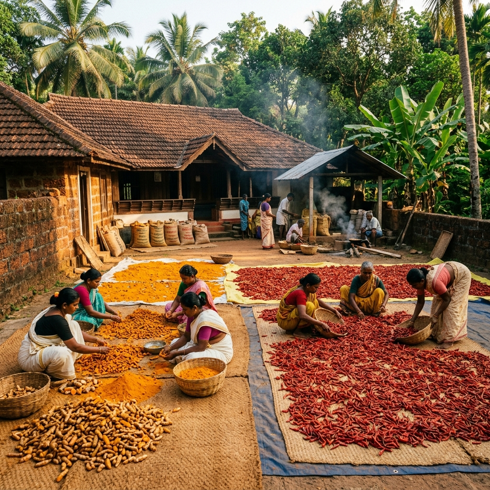
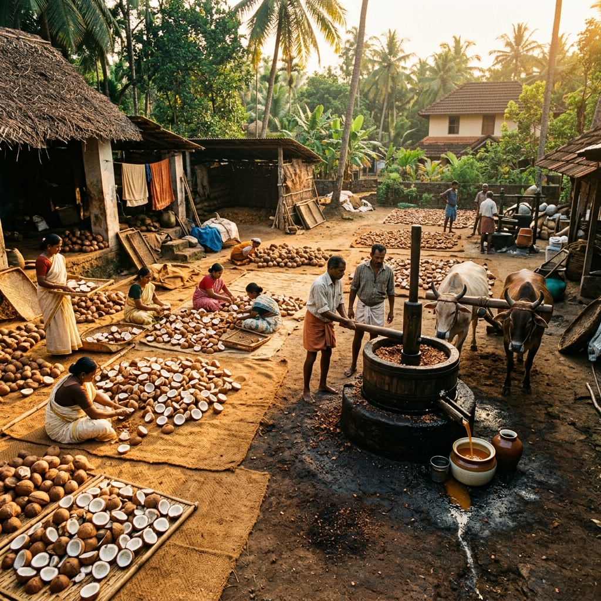
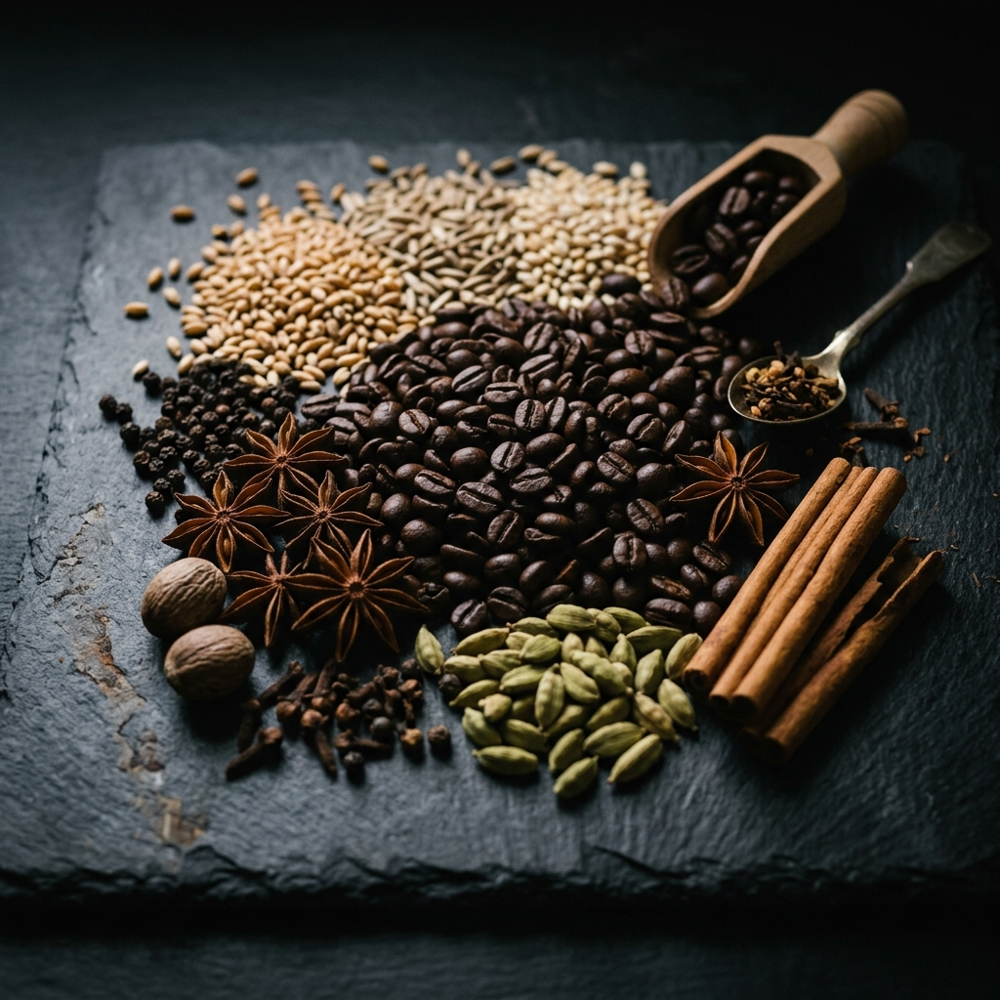
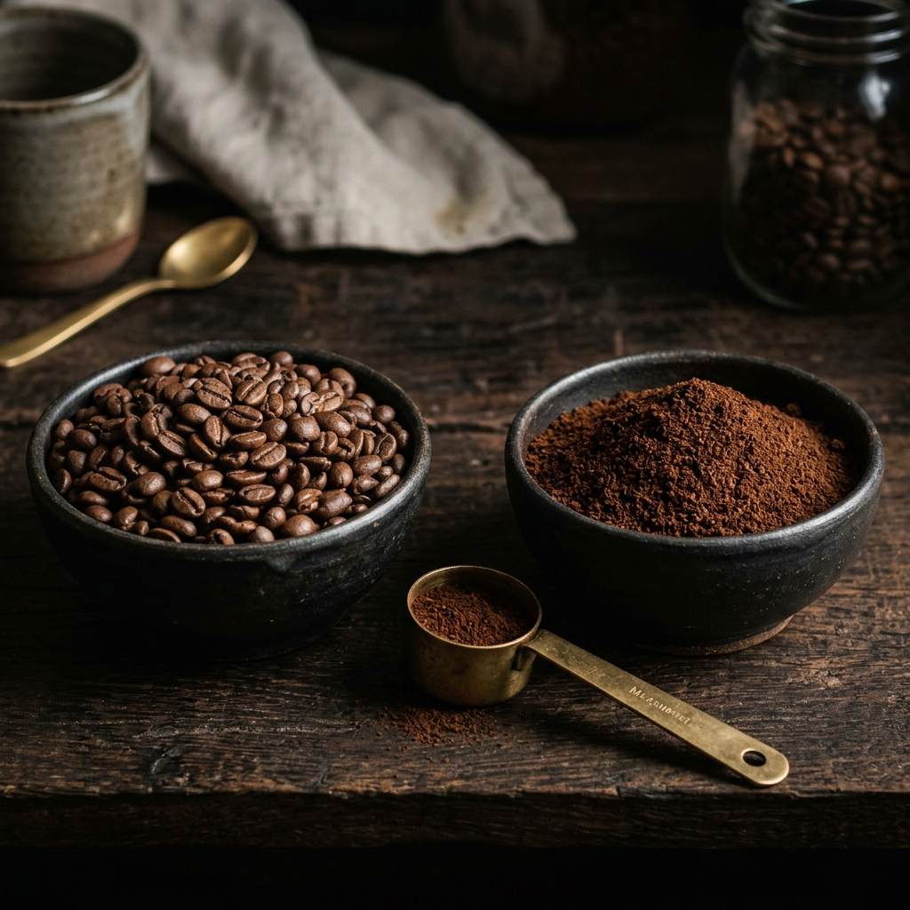

Experience the pure, natural essence of Wayanad through our traditionally crafted heritage offerings.
Since 2007, Sreelakshmi Mills has stood as a guardian of authentic culinary heritage, meticulously preserving the timeless art of traditional milling. Nestled in the heart of Wayanad, we source only the finest raw ingredients to craft our signature stone-ground atta, cold-pressed velichenna, and pristine heritage rice.
Our philosophy is rooted in uncompromising purity. Every grain and spice that enters our mill is handled with absolute reverence, ensuring that the rich, natural essence and nutritional integrity remain entirely intact from harvest to home.
More than just a mill, we are a promise of quality. For nearly two decades, families have trusted Sreelakshmi Mills to deliver the true, unadulterated taste of Kerala—crafted through patience, defined by tradition, and perfected for your modern kitchen.

Traditional Red Rice
Pure & Aromatic
Cold Pressed
Premium Roasted
Purity crafted through generations of expertise at the best mill in Wayanad, bringing the authentic taste of Kerala directly to your home.
From carefully selected raw materials to the finest natural products, honouring time-tested Indian methods.
Serving customers across Pulpally through our three locations.
Near Seethadevi Temple
Pulpally, Wayanad
Kerala – 673579